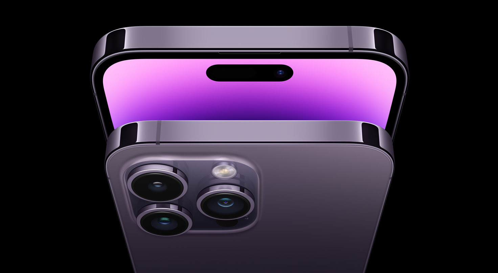

Presentamos los nuevos Iphone, los AirPods Pro rediseñados y tres nuevos modelos de Apple Wacht.
 Dynamic Island, una forma nueva y magica de interatuar con tu Iphone. Una funcionalidad de seguridad diseñada para salvar vidas. Y una innovadora camara de 48mp que logra un nivel de detalle deslumbrante. Todo gracias a la potencia del ultrarapido chip A16 Bionic
Dynamic Island, una forma nueva y magica de interatuar con tu Iphone. Una funcionalidad de seguridad diseñada para salvar vidas. Y una innovadora camara de 48mp que logra un nivel de detalle deslumbrante. Todo gracias a la potencia del ultrarapido chip A16 Bionic
Consulta la desponibilidad mas adelante
